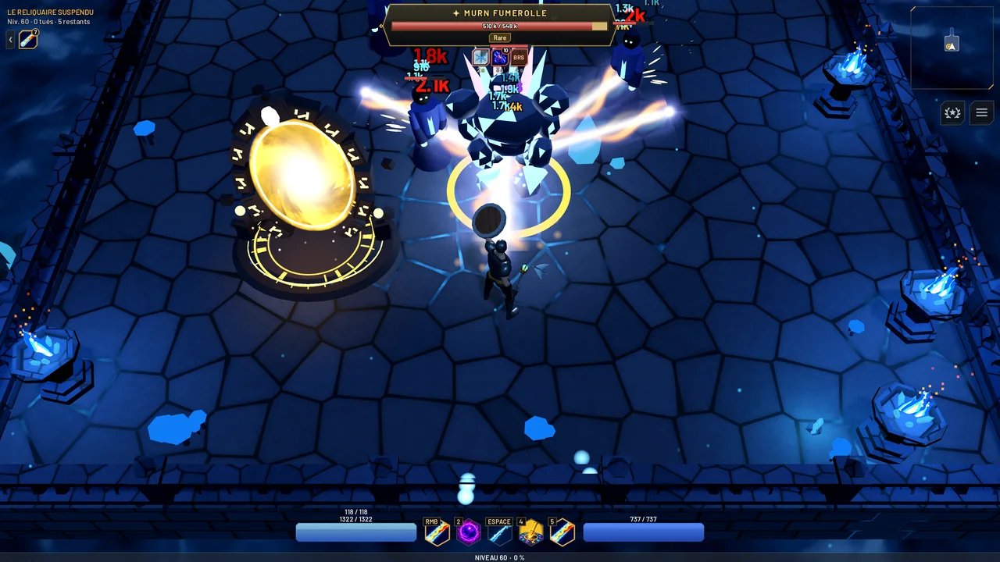

Lames, rayons, hôtel des ventes et ligue Encre
Deux familles de mêlée et vos ombres, des rayons canalisés, un hôtel des ventes, la ligue Encre et le jeu en anglais.
Deux nouvelles familles de mêlée avec leurs ombres, des rayons canalisés, un hôtel des ventes, la ligue Encre, le jeu en anglais et beaucoup de finitions. Bon jeu !
Tailles et estocs
La mêlée se partage maintenant en deux familles. Les tailles balaient un arc devant vous : le Fendoir refait, la Taillade Croisée et le Grand Fauchage, qui repousse tout ce qu'il touche. Les frappes multiples rejouent le geste en alternant le sens, chaque coup un peu plus grand. Les estocs sont une pointe fine qui traverse : Estoc, Empalement, Rafale d'Estocs, et deux estocs élémentaires, l'Estoc Foudroyant et la Pique de Givre.

Vos ombres
Nouvelle statistique : les ombres. À chaque estoc, chacune apparaît autour de la cible, copie translucide de votre héros, et porte le même coup au même instant, à 70 % des dégâts. Une ombre se place à l'opposé, deux forment un triangle avec vous, cinq encerclent la cible. Elles viennent des supports Ombre Jumelle et Meute d'Ombres et du nouvel arbre de talents Maître d'Armes.

Rayons canalisés
Quatre rayons à maintenir — Braise, Givre, Foudre et Néant — et un Rayon Élémentaire refait, qui change d'élément avec ses cumuls. Le rayon s'arrête sur le premier ennemi : la réfraction le divise ensuite vers d'autres cibles. La zone d'effet élargit le faisceau, la portée des rayons l'allonge.

L'hôtel des ventes
À la création, chaque personnage choisit Échange ou Solo. En Échange, l'hôtel des ventes s'ouvre depuis le menu de droite : on parcourt l'équipement, les légendaires et les matériaux jusqu'à la base voulue, on compare chaque annonce à ce que l'on porte, et des filtres de lignes (ET, OU, AU MOINS) trouvent la pièce exacte. On y vend aussi ses objets et ses matériaux. Le marché est simulé pour l'instant.

Ligue Encre
Le monde se décolore : des pages blanches en papier millimétré mangent certaines cartes et libèrent des monstres d'encre. Rendre la couleur remplit des fioles ; la Grue en origami s'installe au refuge et ouvre avec elles le Grand Cahier, une carte tout en papier dont on libère les origamis d'une éclaboussure d'encre.

Et aussi
Le jeu est disponible en anglais. Les aides de jeu se proposent sans interrompre, chaque classe commence avec une arme, les icônes de tous les objets ont été refaites, le Codex dit où trouver chaque monstre et les options graphiques gagnent le SMAA, le FSR 2 et une échelle de HUD séparée.
Notes de version
Mêlée : tailles et estocs
- Coups de taille : Fendoir refait, Taillade Croisée (deux tailles qui se croisent), Grand Fauchage (205°, repousse fort). La zone d'effet agrandit le coup ; les frappes multiples rejouent le geste en alternant le sens, chaque coup un peu plus grand.
- Estocs : une pointe fine qui traverse — Estoc, Empalement (+40 % sur le premier touché), Rafale d'Estocs (trois pointes, geste non interruptible), Estoc Foudroyant (arcs vers les ennemis proches), Pique de Givre (pointes de glace qui jaillissent du sol). Frappe Gangreneuse devient un estoc.
- Ombres : nouvelle statistique. Chaque ombre apparaît autour de la cible et porte le même estoc au même instant, à 70 % des dégâts (1 ombre à l'opposé, 2 en triangle, etc.). Les estocs n'ont pas de frappes multiples.
- Supports : Ombre Jumelle, Meute d'Ombres, Ombres Affûtées, Allonge, Grande Envergure, Moulinet.
- Nouvel arbre de talents Maître d'Armes (ombres, allonge, frappes multiples) ; Maître du Flux : talents majeurs revus (Danse des ombres, Flux ininterrompu, Grand tournoiement).
- Gestes du héros : estoc et tailles animés, coup calé sur le geste et sur la vitesse d'attaque. Sons dédiés à chaque coup.
- Armes en main : lame vers le bas, manche au centre du poing ; doigts du héros moins longs.
Rayons canalisés
- Rayon de Braise, Rayon de Givre, Rayon de Foudre, Rayon du Néant ; Rayon Élémentaire refait (l'élément change avec les cumuls, Convergence à 55 %).
- Le rayon s'arrête sur le premier ennemi touché. Réfraction (nouvelle statistique) : il se divise depuis cet ennemi vers d'autres cibles, à demi-portée ; sans cible, en mini-rayons.
- La zone d'effet élargit le rayon ; la portée des rayons est une statistique à part.
- Supports : Réfraction, Lentille, Faisceau Large, Surcharge, Flux Constant, Rayon Mobile. Talent Prisme du savoir (Déesse du Savoir).
- Visuel entièrement refait : énergie lumineuse propre à chaque élément.
Hôtel des ventes (personnages en mode Échange)
- À la création, chaque personnage choisit Échange ou Solo (SSF). En Échange, un bouton Hôtel des ventes apparaît dans le menu de droite.
- Acheter : Équipement, Légendaires, Matériaux → emplacement (type d'arme) → base → annonces en grandes icônes avec leur prix ; survol avec la comparaison à l'objet porté. Accueil avec recherche et fiches consultées récemment.
- Filtres de lignes : toutes les lignes possibles de la base, fourchette min–max remplie par le palier choisi, blocs ET, OU et AU MOINS n imbriqués.
- Vendre objets et matériaux (prix à l'unité ou total, taxe de 10 %), Mes ventes (Tout encaisser), Historique avec dépenses, recettes et taxes. Une annonce en jeu prévient d'une vente.
- Le marché est simulé pour l'instant : annonces et acheteurs fictifs.
Ligue Encre
- Des pages blanches en papier millimétré mangent certaines cartes et libèrent des monstres d'encre ; recolorer le monde remplit des fioles.
- La Grue en origami s'installe au refuge : avec les fioles, elle ouvre le Grand Cahier, une carte tout en papier dont on libère les origamis d'une éclaboussure d'encre.
- Branche ENCRE de l'Arbre des Terres, cosmétiques de ligue (traînée, renard origami, portail), thème Encre de l'écran titre.
Jeu en anglais
- Tout le jeu est traduit : interface, compétences, objets, talents, dialogues, aides. La langue se choisit dans les options (menu ou en jeu), avec relance proposée.
Aides de jeu
- Les aides se proposent discrètement à gauche : Me guider lance le parcours, J'ai compris la ferme.
- Nouvelles aides : équiper un objet, nouvel emplacement de compétence, première aura, forge, filtre de butin. Toutes sont consultables dans le Codex et peuvent être revues (Options → Jeu).
- Aides désactivables par personnage. Le choix des déplacements est proposé en jeu, après l'introduction.
Personnages et menus
- Chaque classe commence avec une arme blanche de niveau 1.
- Héros et héroïne au choix, équipements visibles sur le personnage.
- Écran des personnages : arme tenue en garde, étiquette Échange / SSF, personnage plus grand ; création plus épurée.
- Codex : onglet Bestiaire (monstres vaincus, modèle animé, où trouver chaque monstre) ; onglet Équipement avec l'icône et la fiche de chaque objet ; clic droit pour déplacer la caméra.
- Icônes de toutes les bases d'objets refaites (tissu vif et cousu, cuir, métal, cendre ; un rang = une couleur) ; quatre nouvelles ceintures. Icônes de compétences et de supports toujours encadrées.
Options
- Anticrénelage en un seul réglage (FXAA, SMAA, TAA, MSAA 2x/4x/8x), mise à l'échelle FSR 1 / FSR 2, réglage Détails.
- Échelle de l'interface de 50 à 150 %, et échelle du HUD séparée.
- Manette : réaffecter un bouton déjà pris libère l'autre action. Carte de performances (F3) plus compacte.
Monstres
- Nouveaux modèles : Mort errant, Gobelin pugnace, Archer et Chaman gobelins, Goule sanguinaire, Noble vampire, Chevalier de sang, Diablotin, Invocateur de flammes.
- Graveur de Runes : départ avec la Rune de Brasier, Gravure Runique au niveau 5.
Corrections
- Les compagnons ne tremblent plus en suivant le héros.
- Marchand : vraie icône de braise, fenêtre allégée. Coffre du refuge et cadre de cible épurés.